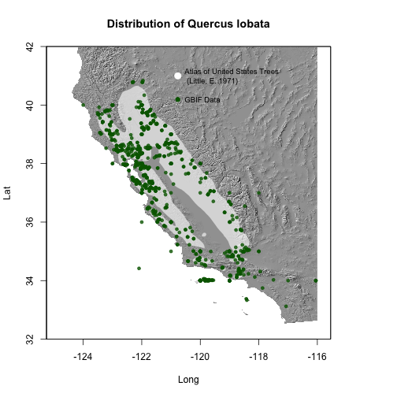

This example comes from Antonio J. Perez-Luque who shared his plot on Twitter. Antonio compared the occurrences of Valley Oak (Quercus lobata) from GBIF to the distribution of the same species from the Atlas of US Trees.
library('rgbif')
library('raster')
library('sp')
library('maptools')
library('rgeos')
library('scales')
keyQl <- name_backbone(name='Quercus lobata', kingdom='plants')$speciesKey
dat.Ql <- occ_search(taxonKey=keyQl, return='data', limit=50000)
From http://esp.cr.usgs.gov/data/little/. And save shapefile in same directory
url <- 'http://esp.cr.usgs.gov/data/little/querloba.zip'
tmp <- tempdir()
download.file(url, destfile = "~/querloba.zip")
unzip("~/querloba.zip", exdir = "querloba")
ql <- readShapePoly("~/querloba/querloba.shp")
alt.USA <- getData('alt', country='USA')
alt.USA <- alt.USA[[1]]
slope.USA <- terrain(alt.USA, opt='slope')
aspect.USA <- terrain(alt.USA, opt='aspect')
hill.USA <- hillShade(slope.USA, aspect.USA, angle=45, direction=315)
plot(hill.USA, col=grey(0:100/100), legend=FALSE, xlim=c(-125,-116), ylim=c(32,42), main='Distribution of Quercus lobata', xlab="Long", ylab='Lat')
# add shape from Atlas of US Trees
plot(ql, add=TRUE, col=alpha("white", 0.6), border=FALSE)
# add Gbif presence points
points(dat.Ql$decimalLongitude, dat.Ql$decimalLatitude, cex=.7, pch=19, col=alpha("darkgreen", 0.8))
legend(x=-121, y=40.5, "GBIF Data", pch=19, col='darkgreen', bty='n', pt.cex=1, cex=.8)
legend(x=-121, y=41.5, "Atlas of United States Trees \n (Little, E. 1971)", pt.cex=1.5, cex=.8, pch=19, col='white', bty='n')
